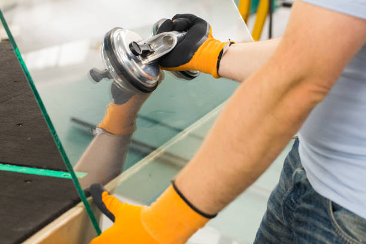

Sobre a Sempre Vidros
Consagrada com 25 anos de serviço de qualidade, a Sempre Vidros traz para o mercado o que há de melhor no setor de serviços de vidraçaria. Fundada em 1998, a Sempre Vidros é destaque na grande João Pessoa e conquista novos clientes a cada dia.
Nossa missão é: "Proporcionar estrutura e qualidade aos clientes".
Carregamos uma visão sofisticada de arquitetura, design e vidros, possuindo profissionais experientes e uma clientela variada. O atendimento possui padrão de excelência e agilidade, garantindo qualidade e satisfação dos nossos clientes.
Nosso estabelecimento
Nosso estabelecimento está localizado na região mais central entre Cabedelo e João Pessoa.
Benefícios
- Escolha dos produtos
- Profissionais Qualificados
- Mais de 20 anos de experiência
- Parceiros
- Entrega de resultado
